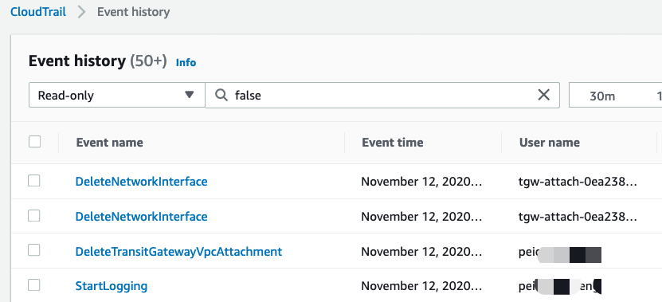

03-CloudTrail审计跟踪（可选）
请确保操作的区域是 AWS新加坡区域（ap-southeast-1）。
AWS CloudTrail 是一项支持对您的 AWS 账户进行监管、合规性检查、操作审核和风险审核的服务。借助 CloudTrail，您可以记录日志、持续监控并保留与整个 AWS 基础设施中的操作相关的账户活动。CloudTrail 提供 AWS 账户活动的事件历史记录，这些活动包括通过 AWS 管理控制台、AWS 开发工具包、命令行工具和其他 AWS 服务执行的操作。此事件历史记录可以简化安全性分析、资源更改跟踪和问题排查工作。 此外，您可以使用 CloudTrail 来检测 AWS 账户中的异常活动。这些功能可帮助您简化分析和问题排查。
在本章节中，您将在您的帐户上启用 CloudTrail，触发Site-to-Site VPN的故障，然后对触发失败的内容进行审核。
创建CloudTrail跟踪
- 导航到“CloudTrail” – “Trails”
- 单击“Create Trail”
- 输入一个你喜欢的名字，例如 “Shenzhen-im-day-trail”
- AWS KMS alias 处，填写“Shenzhen-im-day-kms”
- 单击“Next”
- 勾选Insights event
- 点击Next
- 点击Create Trail
断开Spoke2的TGW连接
- 导航到“VPC” – “Transit Gateway Attachments”
- 选择Spoke2这个attachment
- 单击 “Actions”, “Delete“
- 点击“Delete”，确认删除
回顾 CloudTrail 事件的历史记录
使用 CloudTrail 对 TGW连接删除的原因进行审核。
- 导航到” CloudTrail " 、 " Event history”
- 从最近的发生的事件来，很容易找到我们刚才删除操作的记录。

- 如果点击进去查看详情，我们也能看到是谁，在什么时间，做了什么事情。并且这些日志也会存储到S3中，可以做进一步分析。
恭喜你，你已经完成了此次 Networking Day 的所有实验。
~完~